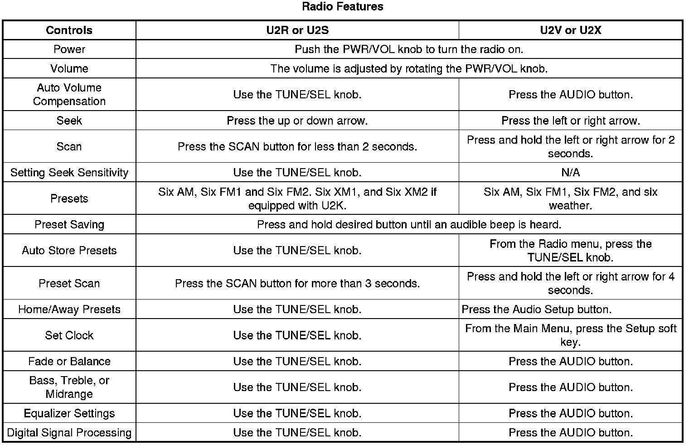
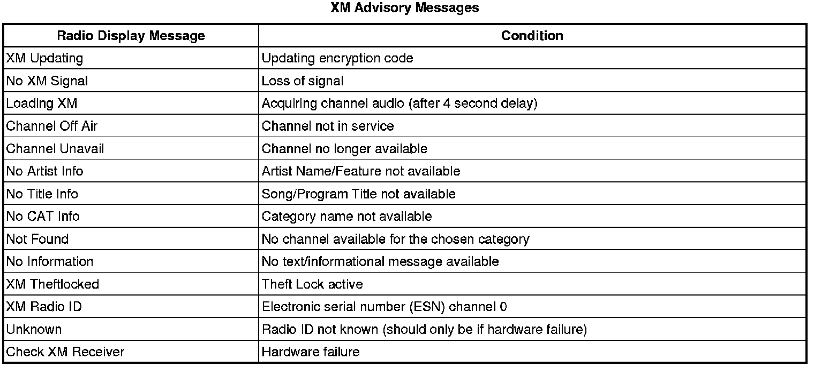

Radio/Audio System Description and Operation
Radio/Audio System Description and Operation
The Entertainment System on this vehicle is configured with either a base or an uplevel system. Both the base and uplevel systems contain a radio, antenna, speakers, and an audio amplifier. Satellite digital radio (U2K) is optional for all radio levels (U.S. only).
The following list shows the radios available for this vehicle:
* Base Radio (U2R) - AM/FM, CD, RDS, and Delco Amplifier
* Uplevel Radio (U2S) - AM/FM, CD, RDS, and BOSE(R) Amplifier
* Uplevel Radio (U2V) - AM/FM, ICDX, RDS, Navigation, and BOSE(R) Amplifier (U.S. and Canada)
* Uplevel Radio (U2X) - AM/FM, ICDX, RDS, Navigation, and BOSE(R) Amplifier (Japan)

Each item in the list below represents topics covered in detail below.
* AM/FM Reception
* XM Reception
* Diversity Antenna System
* Audio Amplifier
* Theft Deterrent
* CD Changer
* Radio Personalization w/Home and Away Feature
* Radio Data System (RDS)
* XM Satellite Radio
* XM Advisory Messages
* Steering Wheel Controls
AM/FM Reception
Radio Signal
The radio signal is sent from a broadcast station and is then received by an antenna. The strength of the signal received depends on the following:
* The power output (wattage) of the broadcasting station
* The location of the vehicle (or receiver) relative to the broadcast tower.
* Obstacles between the tower and the receiver
* Atmospheric conditions
* What band (AM or FM) the station is broadcasting
* Type of antenna and the ground plane
AM Reception
The AM band has a lower frequency range than the FM band. These longer wavelengths:
* Bend around Obstacles
* Follow the curvature of the earth
* May reflect off the ionosphere (skip)
The AM frequencies have longer range due to the ground wave. The ground wave follows the curvature of the earth and is affected by its conductivity. Greater conductivity equates to less signal loss thus transmission over water is better than over land. The AM band has a range of 80-320 km (50-200 miles).
FM Reception
The shorter wavelengths of the higher frequency FM band:
* Reflect off obstacles
* Are absorbed by the ground
* Penetrate the ionosphere
Broadcasts in the FM band are limited to line of sight reception which is typically 40 km (25 miles). Even when out of a direct line of sight, the signal may be reflected into areas that would be in a shadow otherwise. Factors which affect the line of sight include:
* Height of the broadcast antenna
* Height of the receiving antenna
* Terrain and buildings in the broadcast path
XM Reception
XM satellite radio provides digital radio reception. The XM signal is broadcast from two satellites and, where necessary, terrestrial repeaters. The high power satellites allow the antenna to receive the XM signal even when foliage and other partial obstructions block the antennas view of the satellite. Terrestrial repeaters are used in dense urban areas. These repeaters will receive the satellite signal and re-broadcast them at much higher power levels in order to ensure reception in areas with densely packed tall buildings.
Viewing XM Messages
To view the XM information messages, perform the following steps:
1. Press the TUNE/SEL knob to enter the main menu.
2. Turn the TUNE/SEL knob until Clock/Information Display appears on the display.
3. Press the TUNE/SEL knob to select. The last message will be displayed.
Diversity Antenna System
The diversity antenna system uses both left and right rear quarter windows with an applique to the rear glass. Any damage to the antenna requires replacing the glass.
A diversity antenna system is designed to deliver the best radio signal reception possible. Two antennas are used to form a diversity system. The primary antenna is part of the passenger rear quarter window. This antenna receives both AM and FM signals. The secondary antenna is part of the driver rear quarter window and receives only FM signals for the audio system. RFA signals are also received by this antenna module.
The antenna reception signals are sorted out by the radio antenna modules. The radio antenna modules are enabled when the radio is turned on. When the AM or FM band is selected on the radio, the antenna modules connects the rear window antenna directly to the radio. In addition, when the FM band is selected an enable signal is sent to the passenger antenna module. Superimposed on this enable signal is the strength of the signal being received by the radio tuner. The antenna module performs two functions. It switches between the front and rear antennas, monitoring the radio signal strength and combines both signals and phase aligns them to create one strong signal.
The driver antenna module receives the FM2 signal from the left rear quarter glass and passes this signal to the passenger antenna module. The driver antenna module also receives the RFA and TPM signals and passes them via class 2 to the appropriate module. The passenger antenna module receives the FM1 signal from the right rear quarter glass where it then combines the two signals to be sent to the radio via coax. The passenger antenna module is powered by the driver antenna module via the FM2 signal coax. The FM composite signal from the radio provides feedback of signal quality to the passenger antenna module. This signal is 5-8 volts when in FM mode and 0v when in AM.
Audio Amplifier
The radio supplies low level audio signals to the audio amplifier in order to boost the signal sent to the speakers.
The radio uses the antenna input signal to create a stereo audio output signal, which is sent at the user-defined volume level to the audio amplifier. The audio amplifier amplifies the signal and sends it to the appropriate speakers. Tone, balance and fade information is sent by the radio to the audio amplifier via the class 2 communication circuit. Additional output processing is provided by the noise-canceling microphone. The microphone monitors interior ambient noise allowing the audio amplifier to modify the audio output. This maintains the sound at an enjoyable level.
Theft Deterrent
Radio
The Theftlock theft deterrent system is a feature on all base and uplevel radios. There is no need to program a security code into the radio as in past model years. The theft deterrent system now utilizes class 2 serial data to determine if the radio is in the appropriate vehicle. Each time the radio receives the run power mode message, it compares the VIN information it has stored to the VIN information received from the dash integration module (DIM) on the class 2 serial data circuit. If a mis-match occurs, the radio display will indicate to the user the radio is locked. Once this takes place, a DTC will set, the radio will not respond to any button presses and become inoperative. The two scenarios able to cause this condition are:
* A radio is installed from another vehicle
* The DIM is replaced and not properly setup with the correct VIN information for that vehicle
The only way to unlock the radio is by using a scan tool. Always refer to the table in this section to diagnose the Theftlock DTC for further information.
Digital Radio Receiver
The digital radio receiver utilizes class 2 serial data to determine if it is in the appropriate vehicle. Each time the digital radio receiver receives the run power mode message, it compares the VIN information received from the dash integration module (DIM) on the class 2 serial data circuit. If a mis-match occurs, the radio display will indicate to the user the digital radio receiver is locked. The digital radio receiver cannot be unlocked, it must be replaced. The two scenarios able to cause this condition are:
1. A digital radio receiver is installed from another vehicle
2. The DIM is replaced and not properly setup with the correct VIN information for that vehicle
CD Changer
For the uplevel system the CD changer is the main audio gateway. It routes the audio from the source to the audio amplifier.
The radio controls and communicates with the CD changer via the class 2 communication circuit. The CD changer allows for multiple compact discs to be played continuously without having to manually change compact discs. To load multiple CDs, press the LOAD button for more than 3 seconds, then insert the CDs one at a time into the slot below the radio. CDs must be loaded with the label side up. If a disc is loaded label side down, the disc will not play and an error will occur. To eject a single CD press and release the EJECT button. To eject multiple CDs, press and hold the EJECT button for at least 3 seconds. When a CD is loaded in the CD changer the CD symbol will appear on the radio display.
Radio Personalization w/ Home and Away Feature
This feature allows two different drivers to store and recall specific radio settings. The settings recalled by the radio are determined by which remote keyless entry (RKE) transmitter (1 or 2) is used to enter the vehicle. The number on the back of the RKE transmitter corresponds to driver 1 or driver 2. The radio settings automatically adjust to where they were last set by the identified driver.
The radio can store home and away presets. Home and away presets allow you to use one set of preset radio settings in the area where you live, and another set when you go out of town. You do not need to reprogram your presets every time you travel. To change between home and away presets, perform the following steps:
w/U2R or U2S
1. Press the TUNE/SEL knob.
2. Turn the TUNE/SEL knob until H/A HOME PRESETS is displayed.
3. Press the TUNE/SEL knob to change.
w/U2V, U2Y, or U2X
1. Pres the Audio Setup button.
2. Press the HOME/AWAY button.
Configurable Radio Display Keys w/U2R or U2S
The soft keys on either side of the display can be programmed for different functions. To program the soft keys, perform the following steps:
1. Press the TUNE/SEL knob.
2. Turn the TUNE/SEL knob until SETUP is displayed; press the knob to select.
3. Turn the TUNE/SEL knob until CONFIGURE DISPLAY KEYS is displayed; press the knob to select.
4. Turn the TUNE/SEL knob to select the key to be programmed; press the knob to select. The current assigned feature is displayed.
5. Turn the TUNE/SEL knob to select the feature that you would like to assign to the key; press the knob to select.
Radio Data System (RDS)
All audio systems are equipped with technology known as the Radio Data System (RDS). RDS is a system that sends data along with the audio of the FM station you are currently tuned to. RDS is a standard that defines how a FM broadcast station may send digital data along with the audio program. Think of it as a one-way wireless modem, allowing the broadcaster to send information about his program to your receiver.
RDS data is carried in what is known as a "subcarrier". A subcarrier is a frequency that the FM broadcaster is authorized to use to send data or other audio programs that are not audible in the main audio program. RDS information can be used to display program information and to control the radio.
To receive the RDS signal, all that is needed is an FM receiver with an RDS circuit. A special integrated circuit capable of dealing with the RDS signal is in the RDS circuit and passes it along to the receiver's microprocessor where it is decoded and acted upon.
RDS Basic Information
* RDS functions are provided in the FM broadcast band only.
* RDS functions will only work with FM broadcast stations that are broadcasting RDS data.
* Not all FM Broadcast stations broadcast RDS data or offer all of the RDS services.
* RDS functions may not work properly when reception is weak, reception is of poor quality, or RDS is not implemented properly by the FM Broadcaster.
In some cases, a radio station broadcasting incorrect information may cause the RDS features of the radio to appear to work improperly.
Broadcast RDS information can be used in a variety of ways by the receiver and listener, but basically falls into two categories: Display and Control.
Displaying Program Information
RDS displays textual information such as:
* The name of the station.
* The type of program.
* General information such as artist and song title, call in phone numbers, etc.
RDS Traffic Feature (TA) w/U2R or U2S
This feature allows the radio to receive traffic announcements even with the volume muted, or when a CD or cassette is playing. When TA is ON, the radio will search for another station with TA if the current station is not TA capable. To turn TA ON or OFF, perform the following steps:
1. Press the TUNE/SEL knob to enter the main menu.
2. Turn the TUNE/SEL knob until TRAFFIC ANNOUNCE appears on the display.
3. Press the TUNE/SEL knob to select. An X will appear in the box when TA is ON.
RDS Traffic Feature w/U2V or U2X
This feature allows the radio to receive traffic announcements even with the volume muted, or when a CD or cassette is playing. When TRAFFIC is ON, the radio will search for another station with traffic if the current station is not capable. To turn TRAFFIC ON or OFF, press the TRAFFIC button.
Viewing Messages w/U2R or U2S
When MSG appears on the radio display, a new message is available for viewing. These messages are from the RDS broadcaster and may be general information such as artist and song title. To view the text message, perform the following steps:
1. Press the TUNE/SEL knob to enter the main menu.
2. Turn the TUNE/SEL knob until RECALL RDS MESSAGE appears on the display.
3. Press the TUNE/SEL knob to select. The last message displayed will be displayed again.
Using Program Type Presets w/U2R or U2S
The radio has the ability to use RDS data to find stations according to program type (PTY). When in PTY mode the preset buttons are now PTY presets instead of frequency presets. To turn PTY mode ON or OFF, perform the following steps:
1. Press the TUNE/SEL knob to enter the main menu.
2. Turn the TUNE/SEL knob until PROGRAM TYPE MODE appears on the display.
3. Press the TUNE/SEL knob to select. An X will appear in the box when PTY is ON.
Using RDS Seek w/U2V or U2X
The radio has the ability to use RDS data to find stations according to program type. To select program type perform the following steps:
1. From the Radio menu, press the TUNE/SEL.
2. Select RDS List.
3. Select the program types to search for.
4. Select Seek RDS List to search for these program types.
XM Satellite Radio
XM is a national satellite radio service that offers up to 100 coast to coast channels including music, news, sports, talk and children's programming. XM provides digital quality audio and text information, including song title and artist name. A service fee is required in order to receive the XM service. For more information, contact XM.
Digital Radio Receiver
The radio controls communicate with the digital radio receiver via the class 2 communication circuit. The digital radio receiver sends remote radio audio signals to the radio.
Viewing Messages
Press the INFO button while in XM mode to view various pieces of information related to the current song or channel. By pressing and releasing the INFO button, you may view four different categories of information: Artist Name/Feature, Song/Program Title, Channel Category, and other Additional Information that may be broadcast on that channel. Additional Information messages may not always be available. If an Additional Information message is being broadcast on the tuned channel, the INFO icon will appear on the display. Each of the four information types may have multiple pages of text. To reach a category, press and release the DISP or RCL button consecutively until the desired type is displayed. If there are multiple pages of text for the selected information type, the radio will automatically display all the pages for that type at a rate of approximately one page every three seconds before timing out and returning to the default display. You may override this feature by pressing the DISP or RCL button to review all of the pages at your own pace.

Steering Wheel Controls
Some audio functions are available using the steering wheel controls. The steering wheel controls consist of multiple momentary contact switches that connect a series of resistors. When a steering wheel control switch is pressed, a voltage drop occurs in the resistor network, which produces a specific voltage unique to the switch selected. This specific voltage allows the radio (U2R or U2S) or CD changer (U2V or U2X) to identify which switch has been pressed.
The radio or CD changer supplies voltage to the steering wheel controls via the remote radio control supply voltage. The specific voltage signal is returned on the steering wheel controls signals circuit.